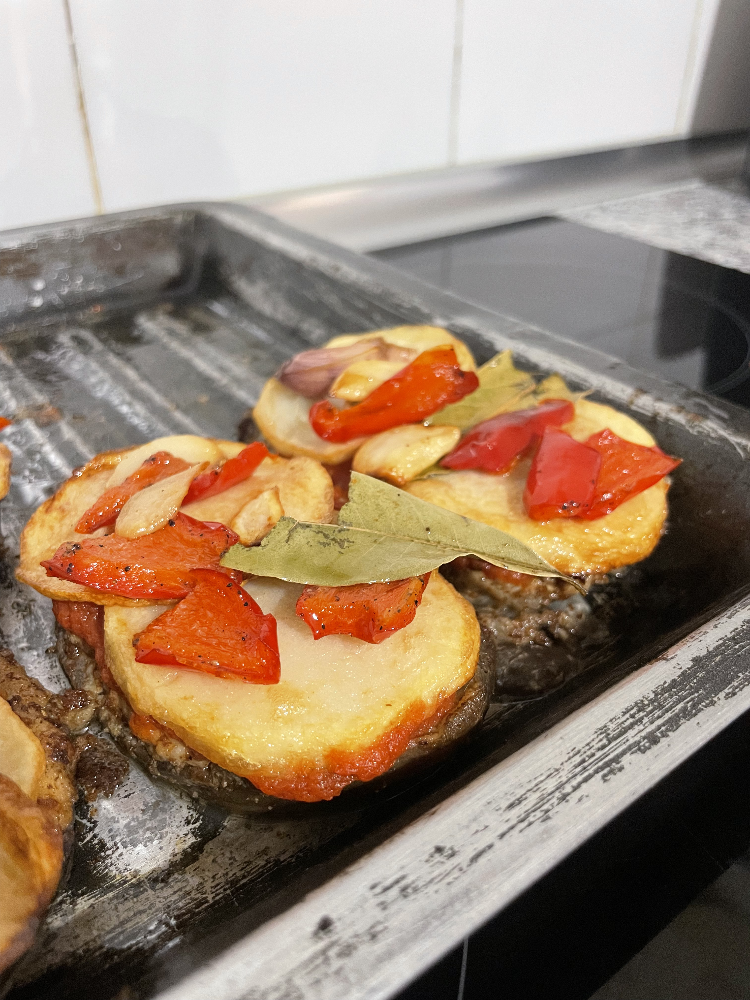

Albergínies rellenes
Llegeix el pas a pas de la receptaLes albergínies rellenes són una autèntica delícia que combina la suavitat de l'albergínia amb el gust intens de la carn picada. Una recepta perfecta per a un dinar saludable i deliciós.